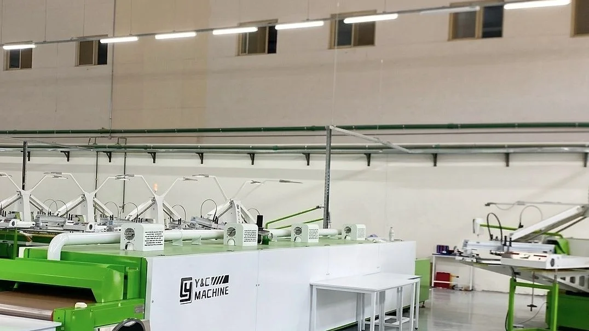

Fabric sourcing
Yarn and knitted fabric from Egyptian mills and partner mills abroad, through Aletex when the buyer prefers. Country of origin declared for all cotton. Better Cotton, organic and recycled yarn with transaction certificates.
Seven stages in one building, under our own supervision. Nothing is subcontracted, so nothing is untracked. Scroll and the floor draws itself.
Yarn and knitted fabric from Egyptian mills and partner mills abroad, through Aletex when the buyer prefers. Country of origin declared for all cotton. Better Cotton, organic and recycled yarn with transaction certificates.
Every incoming roll runs through the inspection machine. Defects, shade and weight are recorded against the roll number before it is released to the floor. A fault found here costs a roll. Found later, it costs an order.
Digital markers, automatic cutting heads, every lay logged with plies and consumption. Marker efficiency is known on the order, not estimated after it, and each cut bundle carries the lay number so any garment traces back to its rolls.
Sixteen lines running, thirty-three at full capacity. Each style has a full operation breakdown before the first piece is sewn, so the work content is known and hourly output by operation goes straight into the ERP.
Neck labels, care labels, drawcords, eyelets, snaps, buttons and zips, sourced to the tech pack and pull-tested per batch. Woven and printed labels to your artwork, checked against the tech pack before they reach the line.
Rotary and continuous printing, screen and transfer work, and an embroidery department, all beside the sewing floor. A print run is a record on the same order, not an invoice from a third party.
Final random inspection to the buyer's AQL, every garment through a calibrated metal detector inside a secured zone, then folded, bagged, labelled and packed to the carton ratio. Cartons are scanned at sealing and at loading.
Move over the plan. Each department names its equipment and what it records.
Fabric inspection machine. 100% of rolls checked for defects, shade and weight. Records: roll number, mill lot, width, GSM, defect points, result.
Computerised auto-cutting line with digital markers. Records: lay number, marker, plies, marker length, pieces, consumption per piece, rolls used.
Rotary and continuous printing, screen and transfer, embroidery heads. Records: run reference, colours, wash and crock test results.
Dedicated sample development department for proto, fit, pre-production and shipment samples. Records: sample stage, comments, approval.
Sixteen active lines, thirty-three at full capacity, with in-line inspection inside each line. Records: hourly output by operation, efficiency, faults with corrective action.
Final random inspection to AQL, calibrated metal detector, broken needle policy, button and snap pull tester. Records: lot, sample size, defects by class, result.
Folding, bagging, size stickers, carton ratios, scanning at sealing and loading. Records: carton number, size ratio, pieces, weight, lots, status.
The floor, department by department. Layout not to scale.
Cut and make. You supply fabric and trims, we cut, sew, finish and pack.
Cut, make and trim. You supply fabric, we source labels, drawcords, zips and packaging to your specification.
Full package. We source fabric and trims, produce, and deliver to port. Minimum 20,000 pieces per style, trial orders from 10,000.

